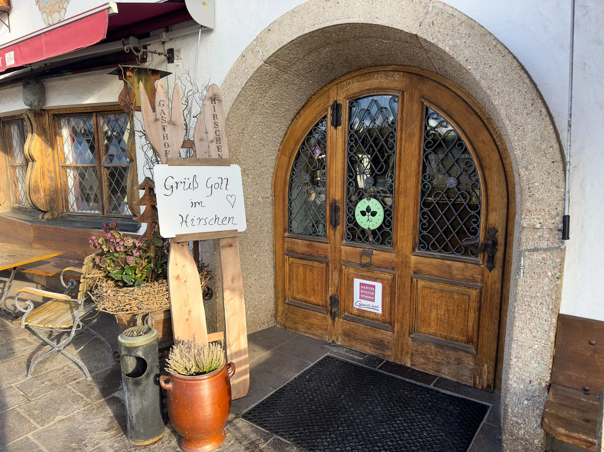
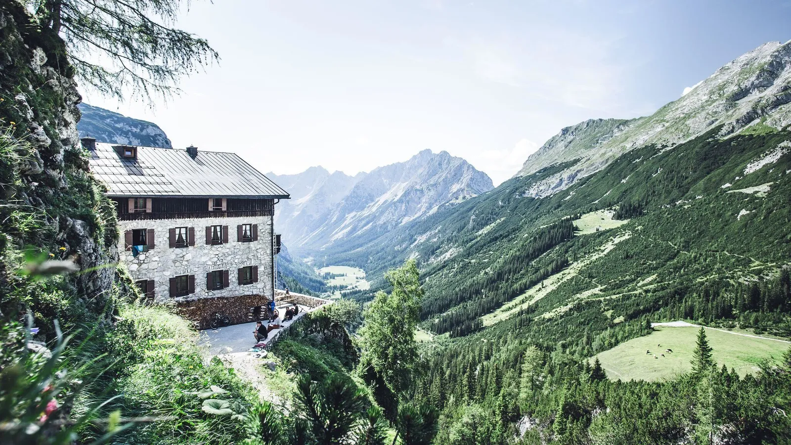
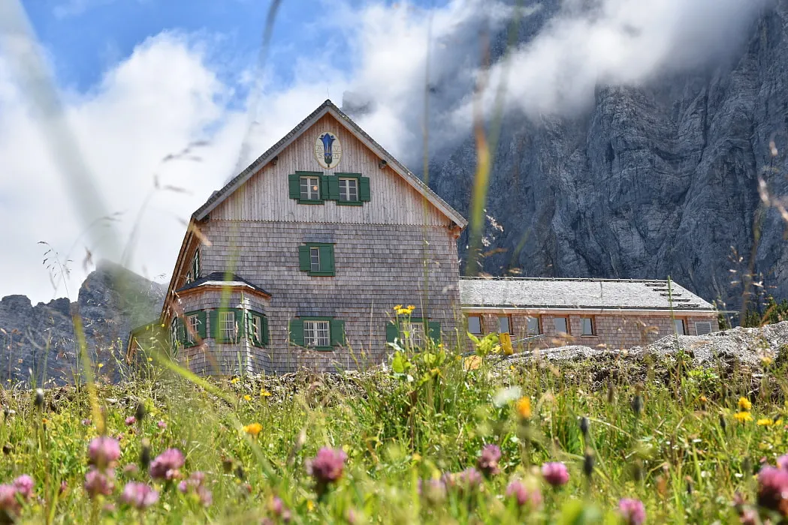
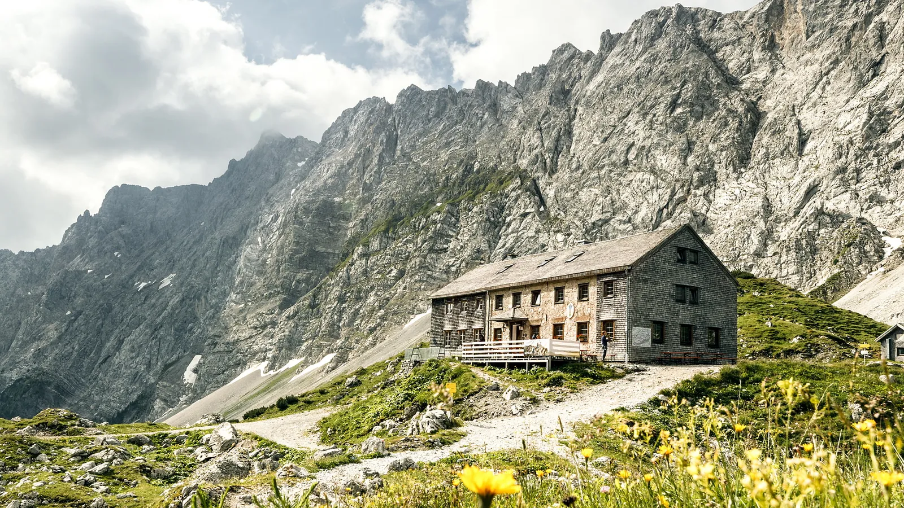
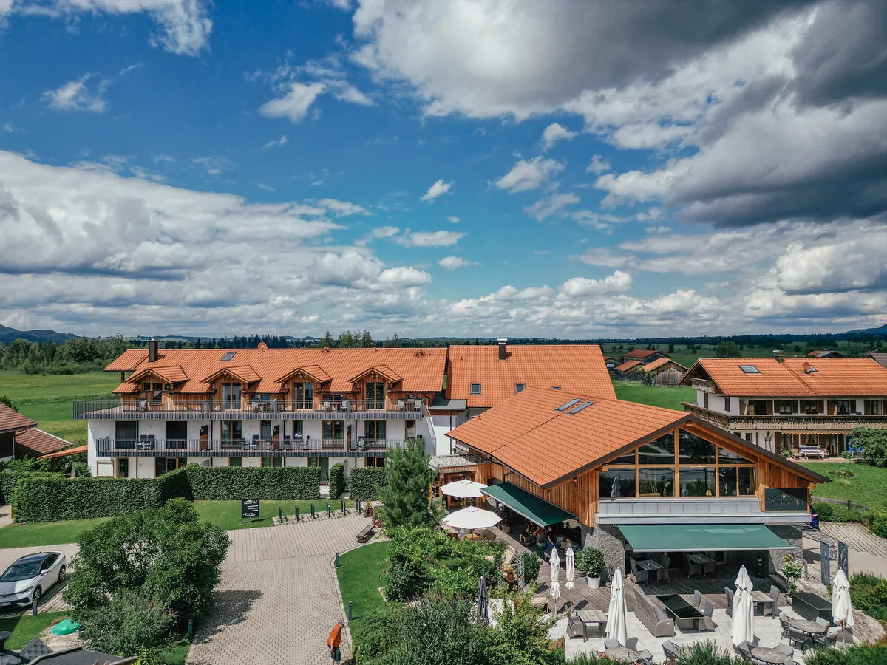

Vóór de tocht

Hotel Gasthof Hirschen
Familiehotel in Leithen (Reith bei Seefeld), sinds 1756 in dezelfde familie. Tiroler kamers met uitzicht op de Kalkkögel en het Wettersteingebergte — de basis voor onze acclimatisatiedag, voor we naar Scharnitz rijden om de tocht te beginnen.
Onderweg — de hütten

Karwendelhaus
Sinds 1908 een van de belangrijkste bases in het Karwendel Natuurpark. Beheerd door de Männer-Turnverein München-sectie van de DAV.

Falkenhütte
Schilderachtig gelegen vlak voor de Laliderer Wände. Beheerd door DAV-sectie Oberland (München), traditioneel houten interieur.

Lamsenjochhütte
Het hoogste punt van onze tocht, in een zadel aan de voet van de Lamsenspitze, met uitzicht het Inntal in. Al meer dan een eeuw beheerd door DAV-sectie Oberland.
Na de tocht

Danner-Hof
Landhotel aan de voet van de Herzogstand, vijf minuten van de Kochelsee. Na de afdaling in Schwaz rijden we door naar Kochel am See om er samen te douchen, te eten en de tocht af te sluiten.